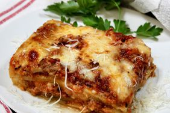

Making lasagna is so much easier than it looks. You'll find the full step-by-step recipe below:
STEP 1:
Combine pork and ground beef in a large, deep skillet over medium-high heat;
cook and stir until browned and crumbly, 5 to 7 minutes. Add onion and cook until trasnlucent, about 5 minutes.
STEP 2:
Stir in crushed tomatoes,tomato sauce, 1 tablespoon fresh parsley, garlic, basil, salt, oregano, and sugar.
Reduce heat to medium-low and simmer,stirring occasionally, for 30 minutes.
STEP 3:
While the sauce is simmering, bring a large pot of lightly salted water to a boil. Cook lasagna noodles in the boiling
water, stirring occasionally, until tender yet firm to the bite, 8 to 10 minutes. Drain and set aside.
STEP 4:
While the noodles are cooking, preheat the oven to 375 degrees F (190 degrees C).
STEP 5:
Mix cottage cheese, Parmesan cheese, eggs, remaining 1 tablespoon fresh parsley, salt, and pepper in a large bowl until combined.
STEP 6:
Assemble lasagna: Spread a spoon or two of sauce over the bottom of a 9x13-inch baking dish just to to coat it. Place two layers of
noodles over the sauce to cover. Layer with 1/2 of the cheese mixture, 1/2 of the remaining sauce, and 1/2 of the mozzarella cheese.
Repeat layers once more using the remaining noodles, cheese mixture, sauce, and mozzarella. Cover the baking dish with aluminum foil.
STEP 7:
Bake in the preheated oven for 30 to 40 minutes. Remove the foil and bake until cheese is golden brown, 5 to 10 more minutes.
STEP 8:
Remove from the oven and let stand for 10 minutes before cutting and serving.
Torna alla hompage